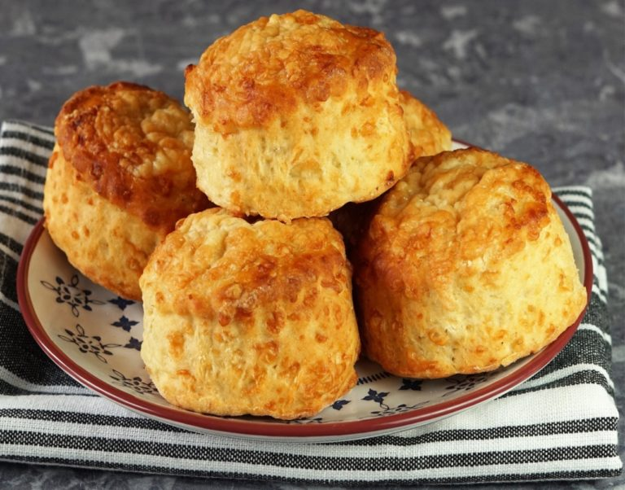

Cheese Scones

Description
Indulge in some cheese scones for afternoon tea or as part of a picnic. They're also great served alongside soups and you can freeze them for later use.
Equipment
- Baking tray
- Mixing bowl
- Rolling pin
- 5cm cutter
Ingredients
- 225g self-raising flour (+extra for dusting)
- Pinch of salt
- Pinch of pepper
- 1 tsp baking powder
- 55g chilled butter (cut into cubes)
- 120g mature cheddar (grated)
- 100ml milk
Method
- Step 1
Heat the oven to 200C/180C fan/gas 6 with a large baking tray inside. Sift the flour, salt, cayenne pepper and baking powder into a bowl, then sift again to make sure the ingredients are thoroughly combined.
- Step 2
Add the butter to the bowl and combine with your fingertips to make breadcrumbs. Sprinkle 100g of the cheese into the breadcrumb mixture and rub together until evenly distributed. Try not to mix too much as the heat from your hands may start to melt the butter.
- Step 3
Make a well in the centre of the mixture and pour in enough milk to give a fairly soft but firm dough. Do not pour in all the milk at once as you may not need it all to get the right consistency.
- Step 4
Lightly flour a surface and roll out the dough to approximately 2cm thick. Cut out the scones with a medium (about 8cm) cutter, then put on a sheet of baking parchment, glaze with a little milk and sprinkle with the remaining cheese. Slide onto the hot oven tray.
- Step 5
Bake in the oven for 15-20 mins or until golden brown and cooked through.